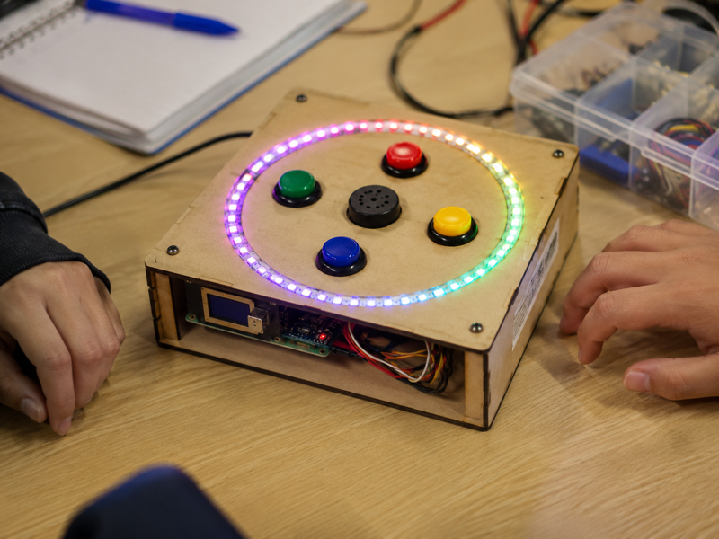
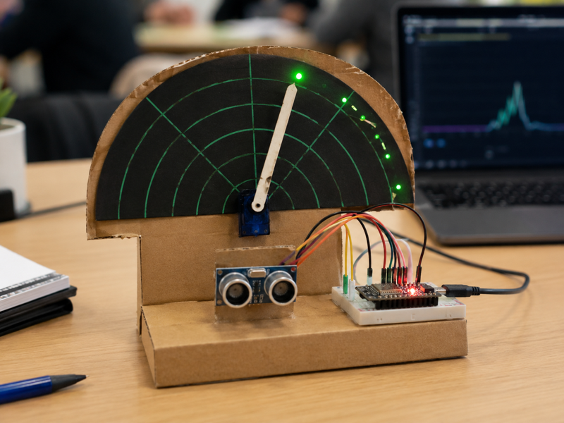
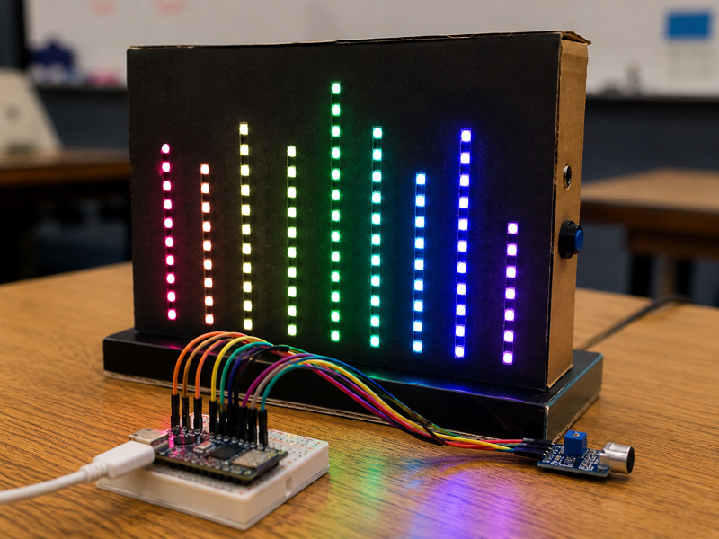

AI + Maker Education
让知识点在一节课里长成一个真实可见的作品
老师输入知识点和学生画像，系统把兴趣、器材、安全边界、完成时间和最终呈现方式一起考虑，生成更像真实课堂产出的硬件项目方案
课堂项目预检中
从概念到作品
01
知识点
一次函数、概率、电路、传感器、循环结构
02
兴趣入口
游戏、运动、音乐、动漫、短视频、宠物
03
硬件作品
能亮、能响、能动、能被调试，也能被讲清楚
≤ 1 小时闭环
真实感作品展示
保留进阶挑战
Why this matters
不是把学生塞进同一个项目，而是让项目适配学生
同一个知识点，对不同学生应该有不同的入口、难度、反馈方式和最后作品形态
快理解型
基础版很快完成，重点放到优化
例如增加计分算法、自动调难度、记录数据，或者解释误差为什么会出现
兴趣驱动型
先做出反馈，再倒推原理
灯光、声音、动作和分数会让学生主动追问为什么会这样变化
基础薄弱型
降低搭建焦虑，保留关键思考
用模块化接线、半成品代码和调参任务，让学生把注意力放在核心概念上
Real-looking outcomes
学生不是只看项目名，而是先被最终效果吸引
这一版首页直接展示作品效果图，点击后可以进入作品效果页，看到更完整的参考信息

反应训练舱
灯环、按钮和计分逻辑组合成一个可玩的反应游戏，适合函数、随机和条件判断
查看真实效果

距离感应雷达
超声波传感器加舵机指针，把数据映射变成能被学生看见的仪表反馈
查看真实效果

节奏采样灯墙
声音传感器和灯带联动，能迅速做出舞台感，很适合做阈值和数据范围教学
查看真实效果
Teacher first
先判断能不能做，再决定让学生做什么
项目门槛、学生画像、作品效果和生成器被拆成不同页面，展示时更像一个真实产品